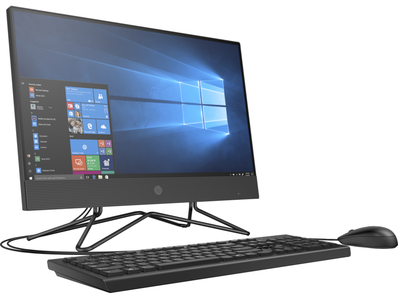

MOJE CV
MOJE KOMPETENCJE: Poważne lekcje informatyki (dla mnie) zaczęły się w 4 klasie podstawówki. W klasach 1-3 tak na prawdę uczyliśmy się korzystać z komputera oraz prostych programów typy Word i Powerpoint. W 4 klasie zacząłem naukę Excela. Przeniosłem się do innej szkoły w 5 klasie, wtedy zacząłem przygodę ze Scratchem. Przez 5-8 klasę uczyłem się programować w Scratchu i mogę powiedzieć, że umiem zaprogramować proste programy oraz gry. Pod koniec 8 klasy miałem 2-3 lekcje z językiem HTML, aczkolwiek mało już pamiętam. Czego bym się chciał nauczyć: Głównie to języka komputerowego Phyton i Javascript. Chciałbym przełożyć swoją wiedzę ze Scratcha w bardziej zaawansowany język. W wakacje próbowałem zrobić coś w Phytonie, ale nie wiedziałem od czego zacząć. Javascript zawsze mnie interesował ze względu na to, że Javą był napisany Minecraft. Ogólnie na razie nie wiem, czy będę kontynuował informatykę w przyszłości, aczkolwiek uważam, że zawsze się może przydać wiedza informatyczna.
Moje Liceum
|